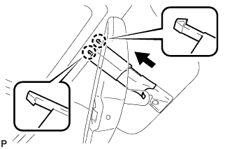

Inner Rear View Mirror Assembly Installation |
| 1. Install Inner Rear View Mirror Assembly (EC Inner Mirror) |
 |
Slide the inner rear view mirror assembly in the direction of the arrow shown in the illustration.
 |
Using a torx socket wrench (T20), install the inner rear view mirror assembly with the screw.
Connect the connector.
| 2. Install Inner Rear View Mirror Stay Holder Cover (EC Inner Mirror) |
 |
Engage the 6 claws of the inner rear view mirror cover.
 |
Slide it in the direction of the arrow shown in the illustration, engage the 2 claws and install the inner rear view mirror cover.
| 3. Install Inner Rear View Mirror Assembly (Normal Inner Mirror) |
 |
Slide the inner rear view mirror assembly in the direction of the arrow shown in the illustration to install it.
 |
Engage the 2 claws and install the inner rear view mirror cover.